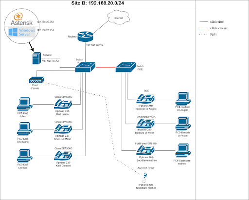
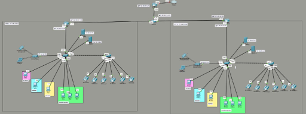
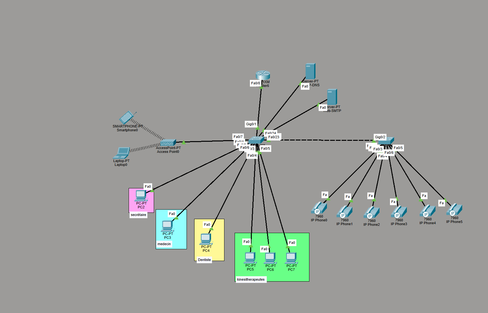
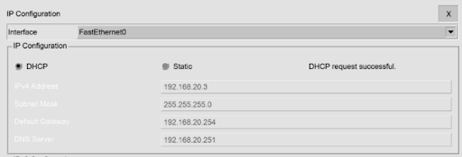
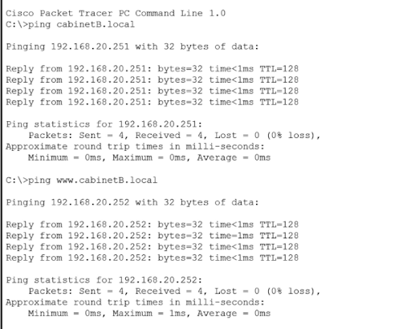
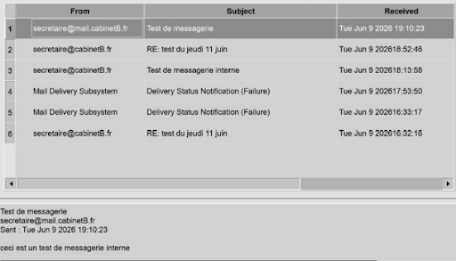

Architecture réseau complète
Pour optimiser la sécurité de notre infrastructure, l'attribution des adresses IP est entièrement prise en charge par le rôle DHCP hébergé sur notre serveur virtuel Windows Server 2019.
Bien que l'utilisation d'un masque de sous-réseau en /24 offre techniquement la possibilité d'adresser jusqu'à 254 hôtes, nous avons fait le choix stratégique de restreindre volontairement l'étendue de la plage d'adresses dynamiques à 16 adresses disponibles. Cette plage a été calculée au plus juste pour couvrir nos besoins stricts :
- Les 6 ordinateurs de bureau câblés des praticiens.
- Les 7 téléphones de l'architecture de ToIP.
- 3 adresses de secours supplémentaires, réservées aux interventions de maintenance du technicien ou à des applications spécifiques.
Cette approche restrictive constitue une barrière de sécurité. En limitant le pool DHCP au strict nécessaire plutôt que de laisser plus de 200 adresses vacantes, nous réduisons considérablement la surface d'attaque. Cela empêche toute tentative d'intrusion à grande échelle par le branchement sauvage d'équipements non autorisés sur le réseau du cabinet, facilitant ainsi le contrôle et la supervision en temps réel de notre parc informatique.
Contrairement aux ordinateurs ou téléphones qui peuvent changer d'IP sans conséquence, les équipements critiques doivent toujours rester joignables à la même adresse pour que les utilisateurs accèdent aux services (DNS, DHCP, Téléphonie, Site Web). De plus, cette fixeté est indispensable pour que le technicien puisse surveiller l'état de l'infrastructure sans interruption.
En complément de cette configuration statique, ces équipements critiques disposent de noms de domaine enregistrés et configurés au sein de notre serveur DNS local.
Plutôt que de devoir mémoriser et saisir des adresses IP complexes, les techniciens et les utilisateurs pourront utiliser des noms simples et explicites. Par exemple, notre hyperviseur ESXi possède l'adresse statique 192.168.20.253 sous le nom de domaine ESXI.gemantique.local.

Comme l'illustre le schéma du Site B, nous avons opté pour le déploiement de deux commutateurs/Switchs PoE (Power over Ethernet) de taille réduite plutôt qu'un seul équipement massif. Ce choix matériel permet d'alimenter directement nos téléphones IP tout en optimisant le câblage : chaque ordinateur de bureau est ainsi connecté sur le port réseau du téléphone qui lui est associé, divisant par deux le nombre de câbles nécessaires vers les switchs.
Afin de rationaliser l'utilisation du nombre limité de ports disponibles sur chaque switch et de structurer logiquement le réseau, les postes des kinésithérapeutes (PC1 à PC3) ont été regroupés sur le premier commutateur afin de garantir leur proximité. Les autres utilisateurs du cabinet (médecin, dentiste et secrétaire) sont quant à eux raccordés sur le second commutateur PoE. Enfin, dans notre configuration actuelle, l'emplacement physique exact du serveur ESXi et de la borne Wi-Fi (Point d'accès) reste flexible et a peu d'importance sur la segmentation générale du trafic.
Simulation Packet Tracer
La simulation sous Cisco Packet Tracer a constitué une étape essentielle de notre preuve de concept (PoC). Elle nous a permis de modéliser l’ensemble de l’infrastructure cible, de valider la logique de notre architecture et de tester toutes nos configurations de manière virtuelle avant de saisir les commandes sur le matériel physique :


- Architecture et Équipements Réseau
- Routage et Commutation : Configuration complète des routeurs Cisco (notamment pour le Site B) avec la mise en place d'interfaces LAN (liaisons locales vers les switchs) et WAN (liaisons intersites connectées au réseau de la salle de TP).
- Routage statique et Interconnexion : Configuration des routes statiques pour permettre aux paquets de circuler de manière fluide entre le réseau local (ex: 192.168.20.0/24) et le réseau du site distant (ex: 192.168.10.0/24).
- Sécurité et NAT : Implémentation du protocole NAT (Network Address Translation) pour masquer l'infrastructure interne. Mise en place de règles de sécurité strictes via des listes d'accès (ACL) afin de contrôler précisément les flux autorisés et bloquer les paquets non sollicités (ex: isolation de certains trafics tout en permettant l'accès vers l'extérieur)
- Déploiement des Services
La maquette Packet Tracer a intégré l'ensemble de la pile de services indispensables à la vie quotidienne d'un cabinet paramédical :
- Services d'Infrastructure : Validation de la distribution automatique des adresses IP via le service DHCP et de la résolution de noms via le DNS.
- Messagerie et Web : Configuration de serveurs de messagerie interne (SMTP et POP3) permettant aux praticiens (médecin, secrétaire, etc.) de s'échanger des courriels professionnels, et hébergement du site web du cabinet.
- Validation sur Packet Tracer
Parce qu'une infrastructure n'est viable que si elle est testée, la simulation a fait l'objet d'une campagne de validation rigoureuse pour simuler les usages réels :
- Tests de Connectivité : Réalisation de diagnostics par commandes ping et traceroute pour s'assurer que chaque terminal (PC de la secrétaire, postes des praticiens) accède correctement aux serveurs et à l'interconnexion intersites.
- Tests Applicatifs : Envoi et réception réussis de mails de tests en conditions réelles (ex: validation de la réception des courriels du médecin sur le poste de la secrétaire), prouvant le bon fonctionnement de la chaîne de transport des données et la robustesse des règles NAT/ACL définies en amont.
Test d’attribution par DHCP d’une adresse IP :

Test de résolution DNS :

Test de la boite mail :
